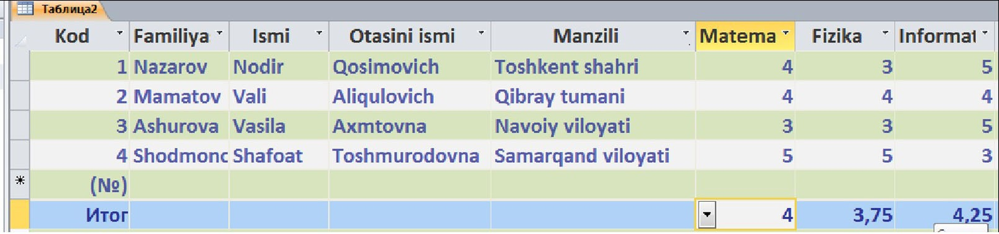

26-DARS. AMALIY MASHG’ULOT
1. MS Access 2010 ning Режим–Конструктор bo‘limidan foydalanib o‘quv darsliklarining nomi, muallifi, yaratilgan yili, hajmi haqida ma’lumot beruvchi jadval yarating.
2. MS Access 2010 ning Создание–Конструктор таблиц bo‘limini tanlab uchta jadval hosil qiling (birinchi jadvalda O‘zbekiston Respublikasining viloyatlar, ularning maydoni, ikkinchi jadvalda viloyat aholi soni, zavod va fabrikalar, uchinchi jadvalda Toshkent shahrining maydoni, aholisi, zavod va fabrikalar to‘g‘risida ma’lumot bersin).
3. MS Access 2010 da Главная bo‘limining Итоги bandi orqali ustulardagi 10 sonning eng kattasini, eng kichigini, o‘rta arfimetigini va yig‘indisini hisoblang.
4. MS Access 2010 da quyidagi jadvalni hosil qiling:


1. MS Access 2010 ni uch xil usulda ishga tushiring.
2. Создание–Конструктор таблиц bo’limini tanlab, o’quvchilar familiyasi, ismi, yashash manzili, telefon raqami to’g’risidagi MO yarating.